Emirates
The capital of the emirate is the eponymous city of Dubai.Dubai is an emirate in the United Arab Emirates. Located on the Arabian Peninsula in the south of the Persian Gulf. Among the seven emirates that make up the country, it ranks first in terms of population (2,137,377 people as of April 17, 2013) and second after Abu Dhabi in terms of area (4114 km²). Only the rulers of Dubai and Abu Dhabi, the capital of the country, have the right to veto decisions on major issues of national importance in the country's legislation. Dubai is located on the coast of the Persian Gulf at about sea level. It borders on the emirate of Abu Dhabi in the south and southwest, on the emirate of Sharjah in the north and east, and is washed by the Persian Gulf in the west. The length of the coast is 72 km. The small exclave of Hatta is bordered by the emirates of Ajman in the west and Ras al-Khaimah in the north, from the southeast the region is surrounded by the state of Oman. The Creek divides Dubai into two parts. Bur Dubai is on one side and Deira on the other. Both sides are connected in three places - the El Maktoum and El Garhoud bridges and the famous Shindoga Tunnel (the prototype of the English Channel Tunnel), which passes under the mouth of the strait.Some flew away in the firm belief that the United Arab Emirates would soon come to an end. Such rumors were just actively circulating at that time. Mass psychosis was then observed in all countries of the world. During the outbreak of the delta strain in mid-2021, a similar phenomenon was observed, but on a much smaller scale. During the omicron outbreak at the beginning of 2022, nothing like this was observed (at least on a significant and noticeable scale). Until the 1950s, when oil fields were discovered in the UAE, the main sectors of the economy were fishing and pearling, which was already in decline. Since 1962, Abu Dhabi was the first of the emirates to start exporting oil. The state of the economy changed dramatically in 1973 when the price of oil rose sharply. Thanks to this, the UAE has gone through an accelerated path of development and has achieved high economic prosperity in 25 years. Due to the large revenues from oil exports, the transport network has been significantly improved. There are no railways in the UAE, but a well-developed network of roads connecting the main cities of the country. In the early 1990s, the country had six international airports. In 1988, the Jebel Ali seaport was opened in the emirate of Dubai, which owns the world's largest artificial harbor.
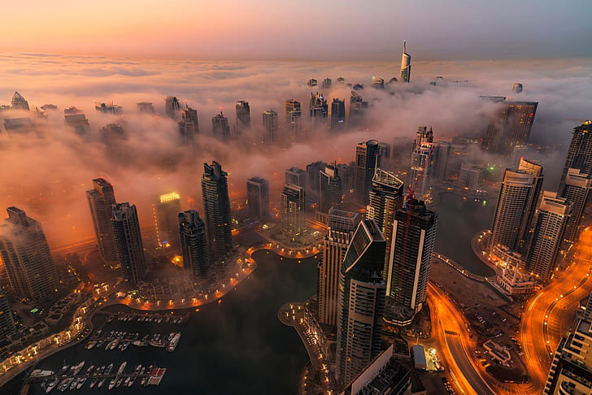 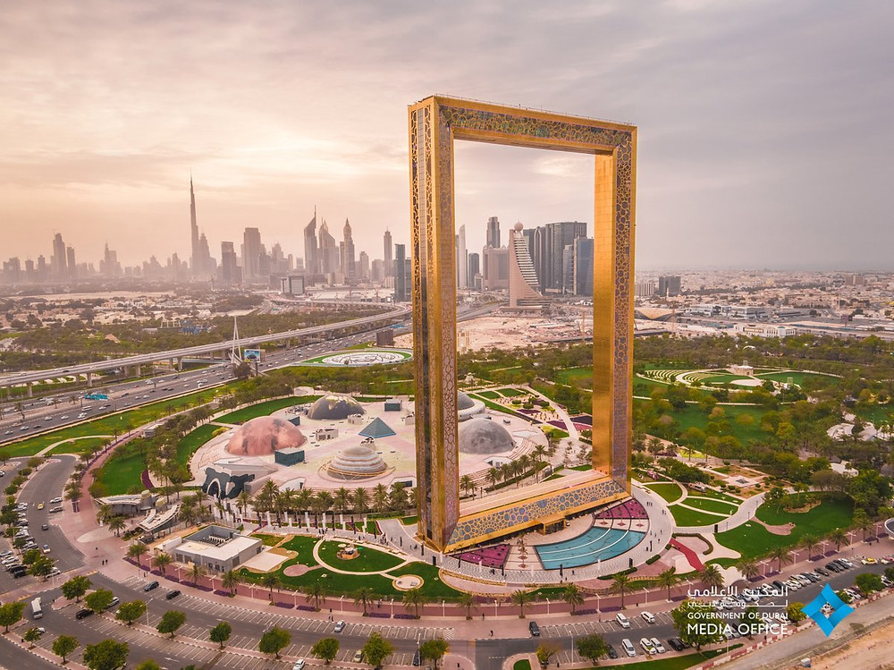 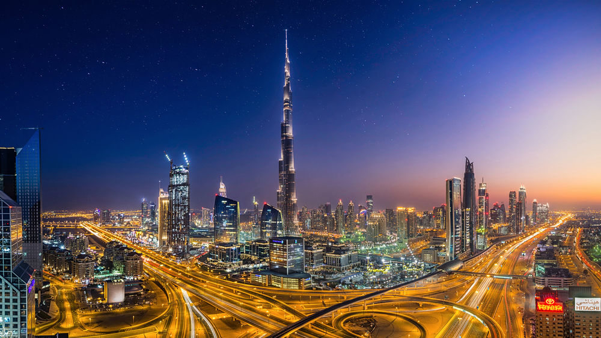New Musulman World
In the 70s of the last century, in order to ensure the security of the prosperous emirates, a new state was formed called the United Arab Emirates. It includes 7 emirates: Dubai, Sharjah, Umm al-Qaiwain, Ajman, Fujairah, Ras al-Khaimah, including Abu Dhabi. In order to support and accept the growing number of maritime traffic, it was decided to build a complex of port facilities . The construction of the port of Rashid ended in 1972. Then Jebel Ali appeared - the largest artificial port in the world. Near it is located the industrial center of the free economic zone, which attracted a significant flow of foreign investment. In 1985, the Emirates airline, now known throughout the world, begins its work. The 1990 Gulf War also had a positive effect on Dubai's economy. Commercial enterprises of Kuwait, Bahren changed their address of residence to Dubai, the American-British troops refueled in the Jebel Ali zone. After the war, oil prices rose significantly, which allowed the development of trade and tourism in the city. The emirates are also known for the Dubai World Cup, which has been running since 1996. A hallmark of Dubai, the first and only seven-star hotel in the form of a sail, the Burj Al Arab, opened in 1999. Since then, as an oasis in the desert, it has been attracting tourists and breathtaking with its grandeur. The most ambitious project in the construction of Dubai was the Burj Khalifa tower, which surpassed all skyscrapers in the world in height and amounted to 818 meters in height. Its construction began in 2003. Maktoum and El Garhoud bridges and the famous Shindoga Tunnel (the prototype of the English Channel Tunnel), which passes under the mouth of the strait.Some flew away in the firm belief that the United Arab Emirates would soon come to an end. Such rumors were just actively circulating at that time. Mass psychosis was then observed in all countries of the world. Vellamwelli Muralidharan, dated January 2021, that since May, 1.3 million have flown from the UAE to India, and only 1.15 million have flown back. From these figures, we can conclude that the population of the UAE in 2021 decreased at least due to the Indians.
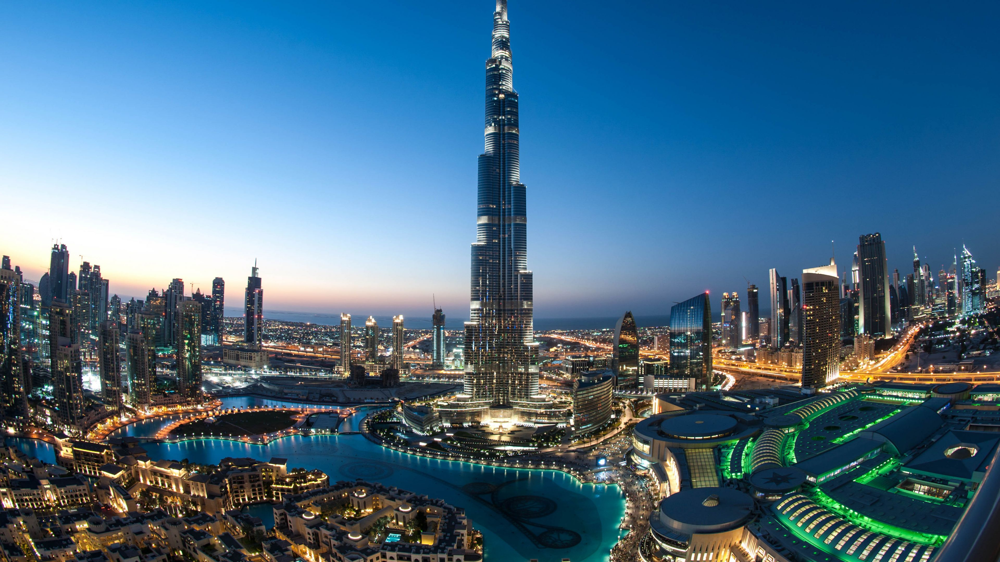 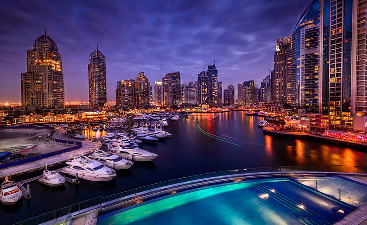 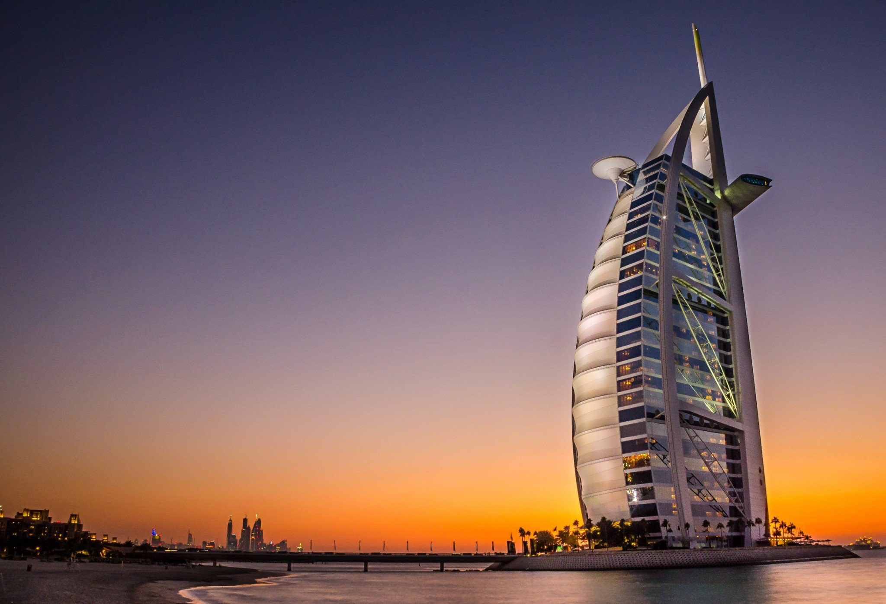Citizens
The last official census took place back in 2005. The population in the UAE is growing very fast due to the new labor force from India, Pakistan, Bangladesh and other countries. Then in 2005 they counted 4.1 million people. After the census, the UN made a forecast for 2010 - 7.2 million. At the beginning of 2020, the rough estimate is 9.89 million. We want to note that these and subsequent figures are only a rough estimate, and not official statistics. However, no one knows how the population has changed in 2020-2021. During and after the first outbreak of coronavirus in March-April 2020, a very interesting phenomenon was observed in the UAE - a mass exodus of visitors. They flew by the thousands on special repatriation flights. How many have flown? Not counted yet. Many flew away for quite objective reasons - back to their families. Some flew away in the firm belief that the United Arab Emirates would soon come to an end. Such rumors were just actively circulating at that time. Mass psychosis was then observed in all countries of the world. During the outbreak of the delta strain in mid-2021, a similar phenomenon was observed, but on a much smaller scale. During the omicron outbreak at the beginning of 2022, nothing like this was observed (at least on a significant and noticeable scale). How did all this affect the composition of the population? It's hard to say now. So far, there is no official data from the authorities, and it is unlikely that these data will appear in the near future.From official data, there is a statement by the head of the Indian Foreign Ministry, Vellamwelli Muralidharan, dated January 2021, that since May, 1.3 million have flown from the UAE to India, and only 1.15 million have flown back. From these figures, we can conclude that the population of the UAE in 2021 decreased at least due to the Indians.Reliable figures for the entire population are not yet available. Therefore, for now we will use the figure of the end of 2019 - 9.89 million. Of course, you can find many other numbers on the Internet, but they are all calculated and conjectural. There are no official statistics, and everyone predicts their numbers.
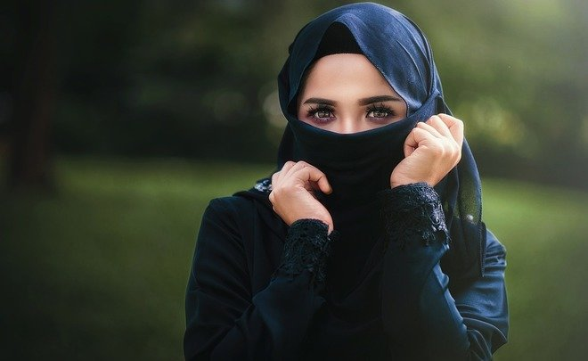 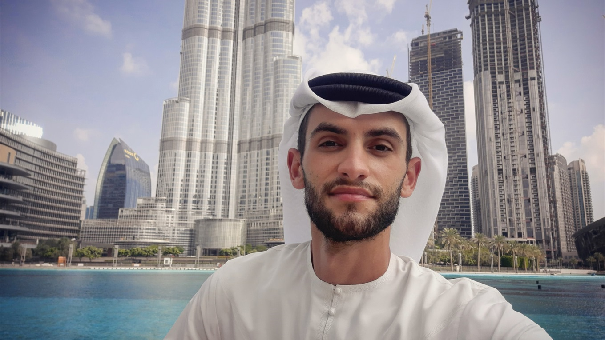 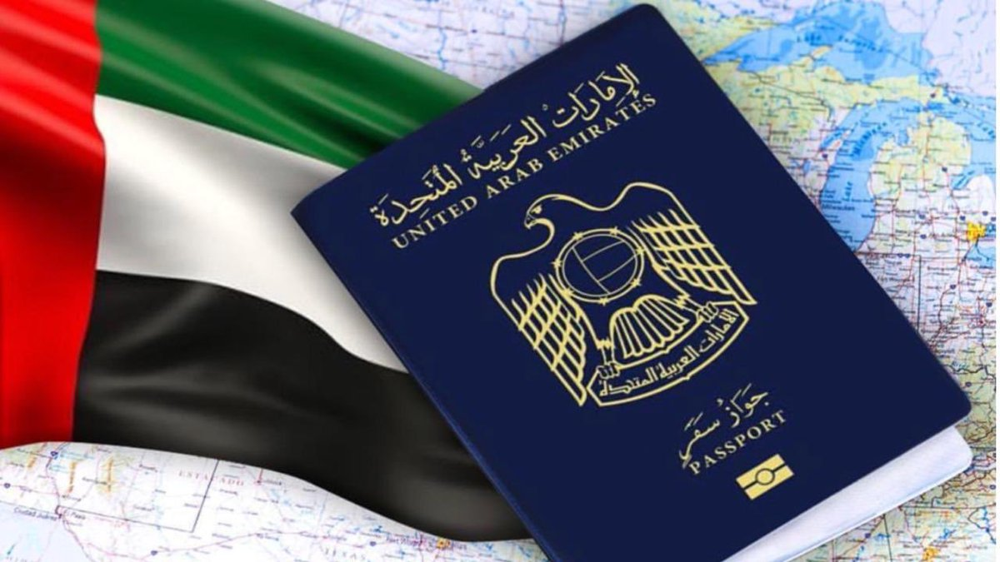Oil production
The dawn of Dubai began with the discovery of oil reserves in 1966,thus began a new history of Dubai. Everything changed dramatically in one moment. The find was discovered during the construction of collector networks. The influx of money accompanied the influx of labor. The contractors came mainly from Pakistan and India. In seven years, the number of residents has more than tripled. Today, indigenous people make up only a quarter of those living in Dubai. Changes have occurred not only thanks to the find, but also to the successful government of Sheikh Rashid ibn Said al-Maktoum. His Bani Yas dynasty came to the top of power in 1833, when the Shingada Peninsula at the mouth of the Dubai Creek was declared independent from Abu Dhabi.Dubai's oil reserves account for only 5% of all the Emirates' reserves. Understanding this, the further policy of the emirates was aimed at strengthening the economy, independent of oil production. The proceeds from black gold were invested in the infrastructure of the city. This made it possible to strengthen the authority of Dubai as a zone with free trade and entrepreneurship.The most important natural wealth of the country is oil and gas. The territory of the UAE with the adjacent water area is located on the platform slope of the oil and gas bearing basin of the Persian Gulf. The main hydrocarbon reserves are concentrated in the emirates of Abu Dhabi and Dubai. According to 1999 data, the proven oil reserves in the UAE are ranked 6th in the world (after Saudi Arabia, Iraq, Kuwait, Iran, Venezuela).In terms of proven natural gas reserves, the UAE ranks 5th in the world (after Russia, Iran, Qatar, and Turkmenistan). Gas reserves are found mainly in Abu Dhabi, as well as in the emirates of Sharjah, Dubai and Ras Al Khaimah. At the beginning of the 21st century, 55% of the produced gas is used in the country, and the rest is exported in liquefied form. In the northern part of the country in the Oman mountains, known chromite placers (Cr2O3 11-16%) are associated with rocks of the ophiolite complex. Small ore occurrences of copper and manganese were also found here. In 1974, deposits of uranium ore were found in Fujairah.
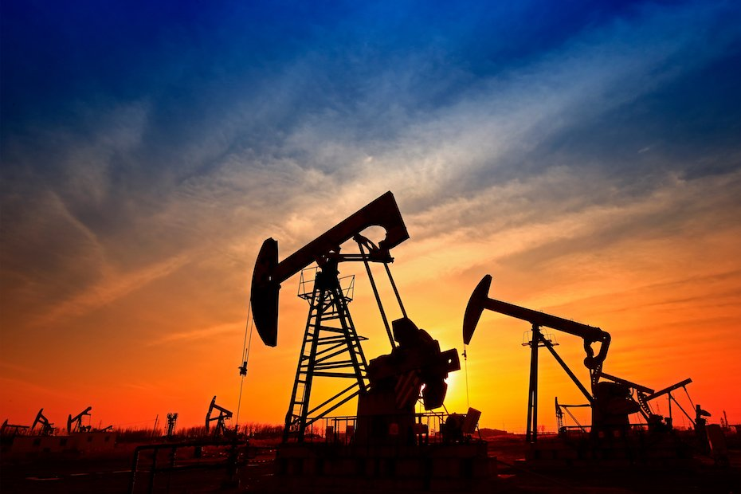 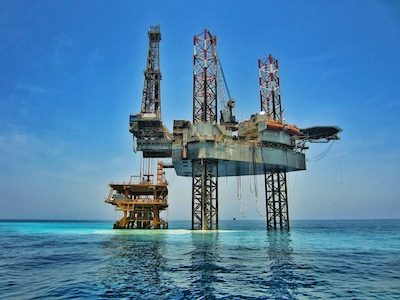 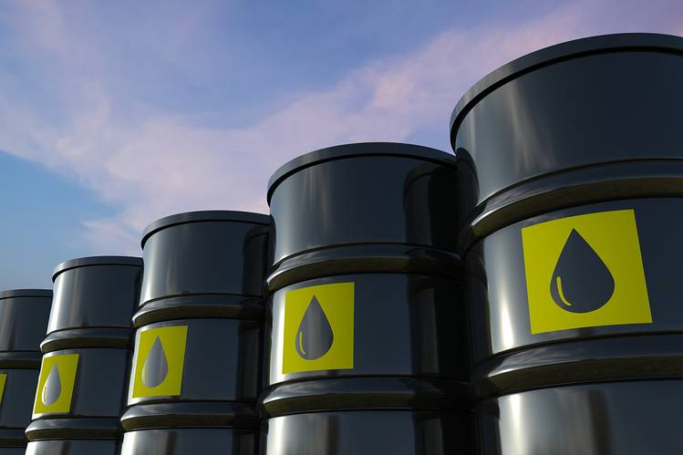Tourism
This is a world exhibition where countries can show any of their achievements. Something similar to the VDNKh exhibition during the Soviet era, but only on a global scale and is more aimed at the average layman. The exhibition takes place every 5 years and lasts 6 months. The 2020 exhibition (postponed to 2021 due to covid) is taking place in the city of Dubai (United Arab Emirates). Exhibition logo. Countries can show from a rural amateur concert to nuclear power plant projects. Any scientific, technical, cultural, educational, intellectual, sports, culinary achievements. Principle: "Show yourself and see others". Each country orders a pavilion at the Expocentre. Although it also happens that several neighboring countries order a pavilion together. It all depends on the financial capabilities of the countries. Achievements are exhibited in these pavilions. Naturally, at World Expo Dubai, the United Arab Emirates has the largest and most expensive pavilion. The style of the pavilion is “falcon in flight”, the area of the premises inside is 1.5 hectares. The preliminary cost of the pavilion is $100 million, the final cost has not yet been precisely calculated. The main goal of the participating countries is to improve the international image of the country and attract investment in their economy. According to the results of the World Expo 2000 in Hannover (Germany), a sociological study by Tjako Walvis was published. In this study, it was already a fact that 73% of countries set themselves precisely these goals. And now all 100% of the countries are striving to improve their image and attract investment. Accordingly, countries are trying to show all the most interesting. And visitors will be interested, no doubt. Exhibition logo. Countries can show from a rural amateur concert to nuclear power plant projects. Any scientific, technical, cultural, educational, intellectual, sports, culinary achievements. Principle: "Show yourself and see others". Each country orders a pavilion at the Expocentre. Although it also happens that several neighboring countries order a pavilion together. It all depends on the financial capabilities of the countries.
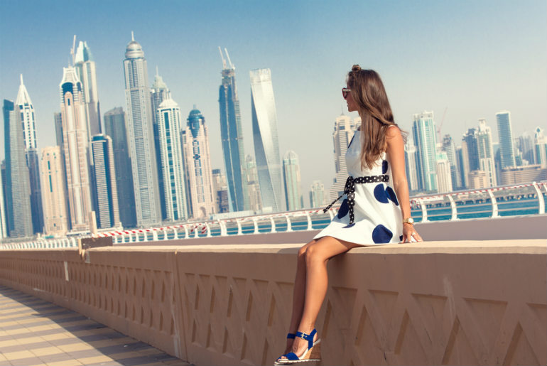 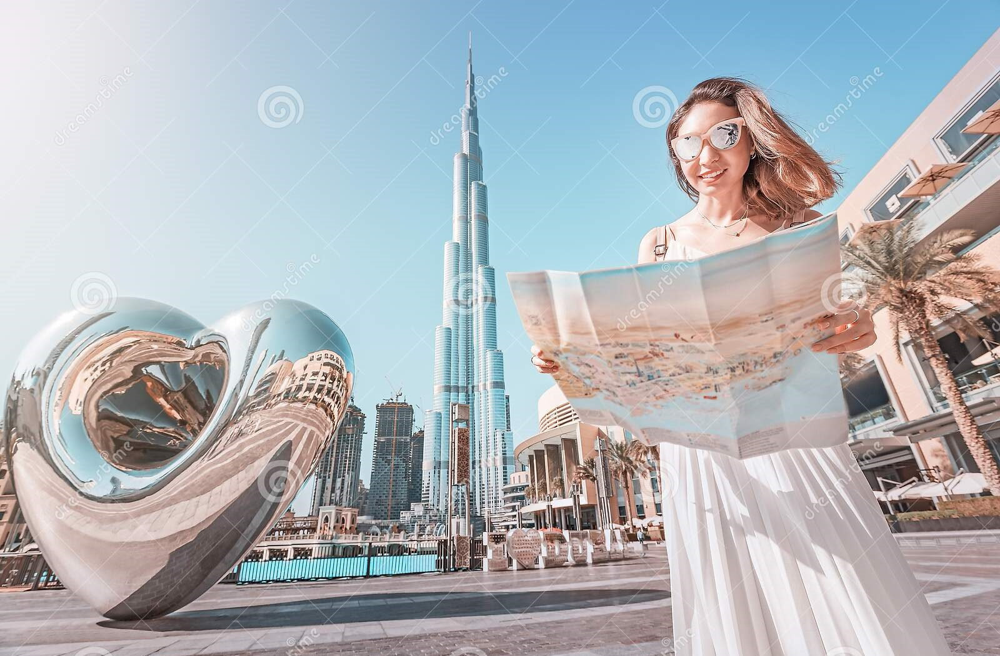 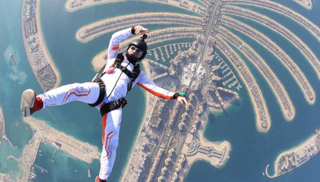